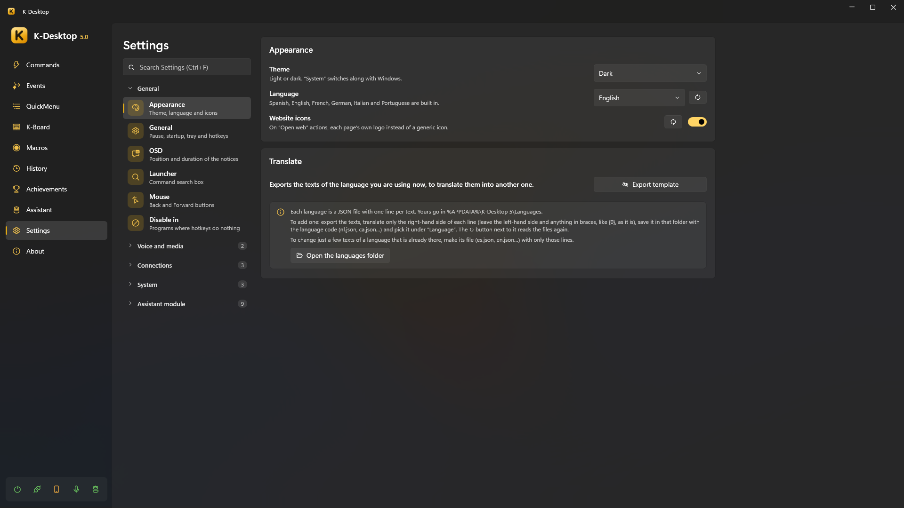
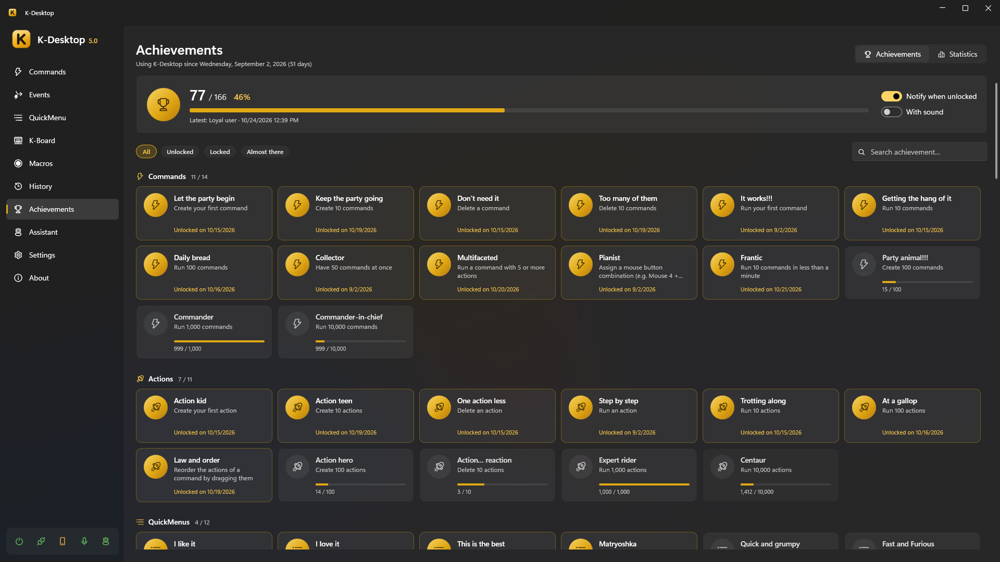

Settings, data and privacy
Settings is organised in foldable groups, with a search box at the top (Ctrl+F): type «volume» or «backup» and it goes there.

General
| Section | What it has |
|---|---|
| Appearance | Light, dark or system theme; language (Windows', or one of the five built in); website icons; translating |
| General | Pause K-Desktop (with its hotkey and sounds); start with Windows, the tray icon and its picture; the hotkeys to show the window and to exit, sounds and startup message |
| Messages and notifications | K-Desktop's on-screen messages (OSD): whether they show (off, none does, except countdowns and the progress of what can be stopped), whether countdowns show in a circle in the middle of the screen, a little lower (with a button to try it), which sound plays when a countdown is cancelled with Esc, where they show (clicking on a drawing of the screen), on which monitor, their size, how long they stay, what they do with a film or a game full screen and which groups show (actions, volume and brightness, voice, warnings). Below, the notifications: their sound (the one of all of them; Show notification can choose another or «Global»), whether the achievement ones show and with their sound, on which monitor and corner (also on a drawing), how long they stay and whether they wait until the full-screen thing ends |
| Launcher | Its hotkey, what it finds (programs, hidden commands, sums, files, the web) and its order |
| Mouse | Hot corners: how long the mouse has to rest in a corner for its command to run. Mouse gestures: on or off, the button to draw (right, middle, Mouse 4 or Mouse 5), show the stroke (the line on the screen and the command that will run) and the programs with no gestures (games, drawing or 3D programs). Block mouse Back / Forward: programs where Mouse 4 and Mouse 5 don't go back or forward. Corners and gestures are chosen in the hotkeys of each command |
Voice
| Section | What it has |
|---|---|
| Voice | Turning voice on or off (off, nothing listens), speech models, microphone, hotkeys to talk and to dictate, and what happens while listening. See Voice |
| Wake words | Always-on listening and the words recorded with your voice, whose each one is and its sensitivity |
Multimedia
| Section | What it has |
|---|---|
| Multimedia | Voice orders for music, videos and volume, and the volume step |
| Screenshots | Folder (and Open), file name with date, time, program or window title, format (PNG, JPG with its quality, or WebP), wait first (to open a menu), always copy, include the mouse pointer, camera sound and a flash over what was taken |
| Screen recording | Folder (and Open), file name (as in screenshots), frames per second (30 or 60), quality (low, normal or high) record the mouse pointer and mark clicks with a circle (yellow for the left button, blue for the others; it is in the video, not on the screen); it is encoded to MP4 (H.264) with the graphics card. For GIF and animated WebP: maximum width (480, 800 or real size; shrunk without distorting) and frames per second (10, 15 or 20) (see Record video in Actions) |
| Audio recording | Folder (and Open), file name (as in screenshots), format (WAV, MP3 or Opus: converted when it ends), microphone volume (only in recordings), split long recordings every so many minutes, and Save what just played, which keeps the last seconds in memory so Record audio → Save what just played can save them (nothing is written to disk) |
Connections
| Section | What it has |
|---|---|
| Remote control | The UDP server: port, where from, key and what is allowed. See Phone and remote control |
| Web app | The web server, pairing and paired devices, touchpad and keyboard |
| Mobile app | Its version and «Save the APK» |
System
| Section | What it has |
|---|---|
| Disable in | Programs where K-Desktop's hotkeys do nothing (games, remote desktops), with a hotkey to add or remove the one in front |
| Magnifier | Zoom, shape (rectangular lens, round lens or full screen), size and «Try it»; look: border (none, thin, medium or thick) and its color, colors (normal, inverted or more contrast) and smoothing; behavior: follow the text while you type, Ctrl + wheel changes the zoom while it is on, and turn off by itself after a while without moving the mouse |
| Data | The data folder (a link that opens it), export, import and the log; automatic backups (every how many days, how many to keep, folder with Browse and Open, and Back up now) and resetting achievements and statistics |
| Updates | Version, Check now, what to do when there is a new one, when to check (when K-Desktop starts, every 6 hours, once a day or once a week) and the installed assistants, each with Update…. A new version is told with a notification; clicking it opens this page |
The assistant module has its own group: see Assistants.
Backups
- Export saves everything of yours to a
.zip: settings, commands, QuickMenus, macros, K-Board profiles, achievements and statistics, wake words, and your own icons, sounds and languages (and the assistants' data). - Automatic backups: the same full backup every N days, keeping the last ones, in the folder you choose (safer on another disk, OneDrive or a NAS). Besides, the settings are copied every day.
- Import restores a backup. The current configuration is saved to the Backups folder first.
- To take a single thing (a command, a macro, a profile, an event, a QuickMenu, a layout or a text) with what it uses, without touching the rest: export and import one at a time.
Languages
Five are built in: English, Spanish, French, German and Italian. Extra languages are JSON files in
%APPDATA%\K-Desktop 5\Languages. Under Translate, Export template saves the current language: translate the
texts, save the file there with the language code (nl.json) and pick it under Language. A file with only some texts
(en.json) changes only those.
Achievements and statistics
Over 100 achievements with animated notifications, and statistics of what you use most.

Privacy
Speech recognition, wake words, voices and the assistants' AI all run on your PC. Nothing you say or write is sent anywhere. K-Desktop only goes online for what you ask of it:
- web requests in your commands;
- the assistants' web, weather and currency tools, and the tools and MCP servers you add yourself;
- checking for updates, and downloading voices or models.
The phone remote talks to the PC over your local network and needs pairing, even from the same PC.